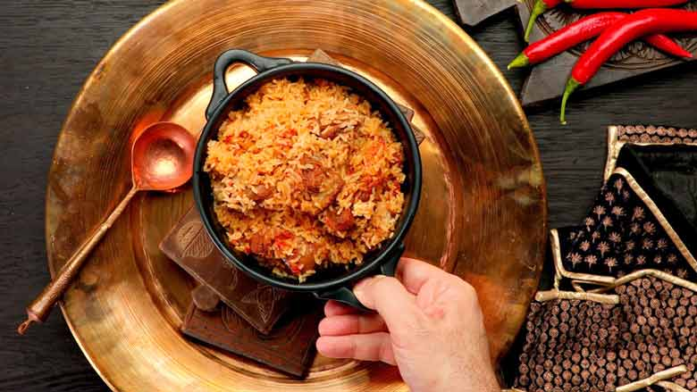

Ambur Biryani

Description
The nawabs of Arcot, the local royals, are said to have learned the fine art of cooking biryani from the nizams of Hyderabad.
The descendants of the cooks for the nawabs of Arcot later established the Star Briyani Hotel in Ambur in 1890. Note the spelling: they spell it briyani,
not biryani. Star Briyani Hotel's most famous contribution to the repertoire of Indian biryanis is the authentic muslim mutton biryani from Ambur, known as Ambur Star Briyani.
There are a few factors that distinguish Ambur mutton biryani from other biryanis.
First, Ambur biryani is made with a short-grained rice called seeraga samba or jeeraga samba rice (also known in short as jeera rice).
For authentic Ambur mutton biryani, use only seeraga samba rice, which is grown in Tamil Nadu, West Bengal, some other parts of India, and Sri Lanka.
The rice is called samba because it is grown in the samba season (August through January). Samba rice is very popular in West Bengal where it is known as gobindobhog rice.
It has small ovular grains, which are one-third the size of the much longer grains of basmati rice (therefore called jeera rice - small like cumin seeds or jeera).
It is also much harder than other varieties of rice and has a less fluffy texture when cooked. It also has a distinct starchy or corny taste and a unique aroma and flavour.
Seeraga samba is the most expensive sub-variety of samba rice and has the smallest grain.
Second, the Ambur biryani recipe does not use spice powder like garam masala.
Instead, only a few whole spices are used - green cardamoms, cinnamon, and cloves. All the spices are used whole and tempered in oil.
The hotness and taste in this Ambur mutton biryani come from red chilli paste, which can be adjusted to suit your palate or preference.
If you want the Ambur Star Briyani less spicy, remove the seeds from the chillies.
It is very important to use freshly ground red chilli paste to achieve the right flavour and taste.
Ingredients
- 350 grams seeraga samba rice
- 100 ml oil, (about 6½ tablespoons)
- 3 pieces cinnamon, each about 1-inch in length
- 3 cloves (laung)
- 3 green cardamom pods
- 150 grams onions, (about 1½ medium onions), cut in half and then thinly sliced, divided use
- 40 grams garlic paste, (about 1½ tablespoons)
- 40 grams ginger paste, (about 1½ tablespoons)
- 1 1/2 tablespoons mint leaves, chopped, divided use
- 1 1/2 tablespoons coriander leaves, chopped, divided use
- 6 red chillies, large, fresh, deseeded, ground to make about 3½ tablespoons paste
- 150 grams tomato, (about 1½ medium tomatoes), chopped
- 350 grams mutton, cut into approximately 2-inch pieces
- 1 1/2 teaspoons salt, or to taste
- 60 ml yogurt, (about ¼ cup)
- 2 teaspoons lime juice
Steps
- Place rice in a bowl and wash under running water, gently stirring and mixing the rice with your hands, draining each time the bowl fills up. Do this 2 or 3 times till the water runs clear; then let soak in fresh water, covered, for 30 miniutes. Drain. Cook rice in 2 liters water with 1 tablespoon sea salt for 4 to 5 minutes. Note that the rice will not be fully cooked. Drain and set aside.
- Place a heavy kadhai or wok on high heat and pour in oil. Once the oil heats up, toss in cinnamon, cloves, and green cardamom; stir. When the cardamom has plumped up, stir in about ½ tablespoon sliced onion, reduce heat to medium, and sauté for 30 seconds. Add garlic paste and sauté till cooked through, about 2 minutes, before adding the ginger paste. Stir till the colour just starts changing.
- Toss in ½ tablespoon mint leaves and ½ tablespoon coriander leaves, and fry till the garlic - ginger turns golden brown. Tip in the fresh red chilli paste, stir well for about a minute, then add the remaining onions. Sauté till translucent, about 2 minutes. Add chopped tomatoes and cook till the oil leaves the masala, 6 to 7 minutes.
- Tip in mutton and cook, stirring, on high heat. Toss in salt, and sauté for 6 to 7 minutes, scraping the bottom of the kadhai so that the masala does not catch. Reduce heat to low, add yogurt and bring to a boil, stirring continuously.
- Pour in 240 ml hot water (about 1 cup) and lime juice. Add remaining mint leaves and coriander leaves. Stir well, scraping and deglazing the kadhai. Bring to a boil then transfer to a pressure cooker.
- Seal the lid of the pressure cooker and cook on high heat till it reached full pressure (first whistle). Then reduce the heat to low and cook for about 20 minutes. Remove from heat and allow to cool before opening.
- Transfer to a kadhai or other pot with a tight fitting lid over high heat. Once hot, ladle cooked seeraga samba rice over the meat. Stir carefully but well to mix and combine without breaking the rice. Cover tightly with the lid, reduce heat to low, and give dum for 15 minutes.
- Transfer to a serving bowl and eat hot.